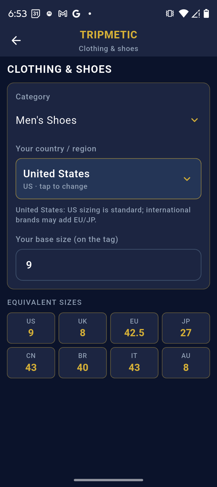
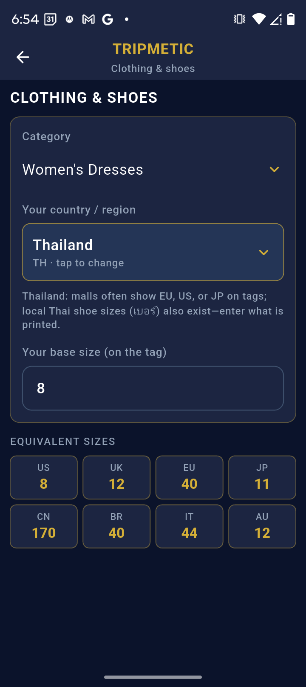
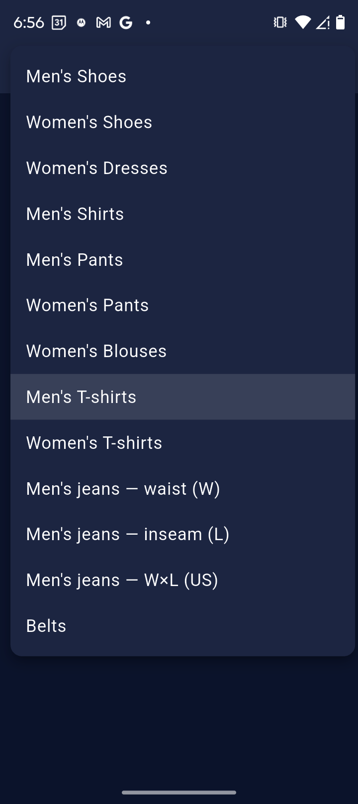
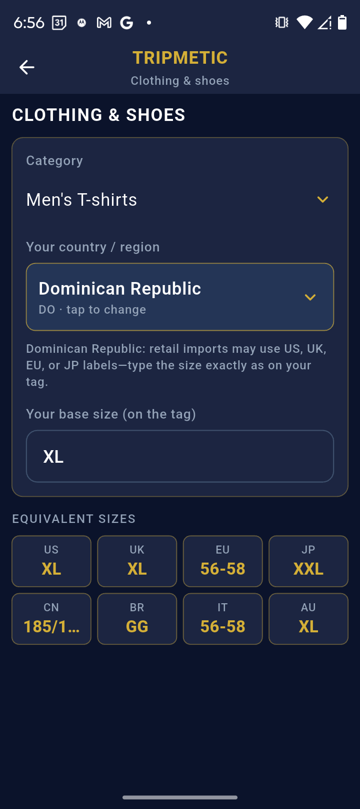

Shopping for apparel in a foreign country introduces unnecessary friction. A "Size 10" shoe in the United States is entirely different from a "Size 10" in the UK, and standard metric sizing in Asia often requires scaling up.
The Tripmetic International Size Converter serves as your high-fidelity translation engine for global retail. By utilizing a comprehensive, standardized database, it instantly maps your home sizes to every major international region. Here is how to utilize the toolkit.
1 Access the Converter
Navigate to the More Tools menu on your bottom navigation bar. Tap on the Clothing Size Converter to open the main retail dashboard.

2 Select Your Apparel Category
The database is split into two primary pipelines: Men's and Women's apparel. Select your required gender category, and then tap the specific item type you are shopping for.
- Men's Categories: Shoes, Shorts, T-Shirts, and Pants (Trousers).
- Women's Categories: Shoes, Blouses, Dresses, and Pants.

3 Translate Across Borders
Once you select an item—for example, Men's Shoes—the interface will display a scrollable list. Simply find your known native size (e.g., US 10.5). The application will instantly display the mathematically converted sizes for all other major regions, including the UK, EU, Japan, and standard Asian sizing.

4 Letter-to-Number Conversions
Many international retailers use standard Alpha sizing (Small, Medium, Large) rather than numeric measurements. The Tripmetic engine includes built-in Letter-to-Number mapping. If a boutique in Italy only lists numeric sizes for dresses, you can check the app to see exactly which numeric range translates to your standard "Medium."

Frequently Asked Questions
Tripmetic provides the standardized international baseline translations. However, retail manufacturing is highly fragmented. A "Large" from a fast-fashion brand may fit differently than a "Large" from a boutique tailor, even within the same country. Always use the converter as your high-accuracy starting point, but physical fitting is still recommended.
Currently, the Tripmetic application is precision-engineered for the adult professional traveler. The database strictly supports standardized adult men's and women's apparel.